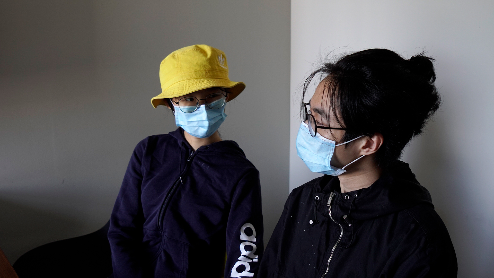
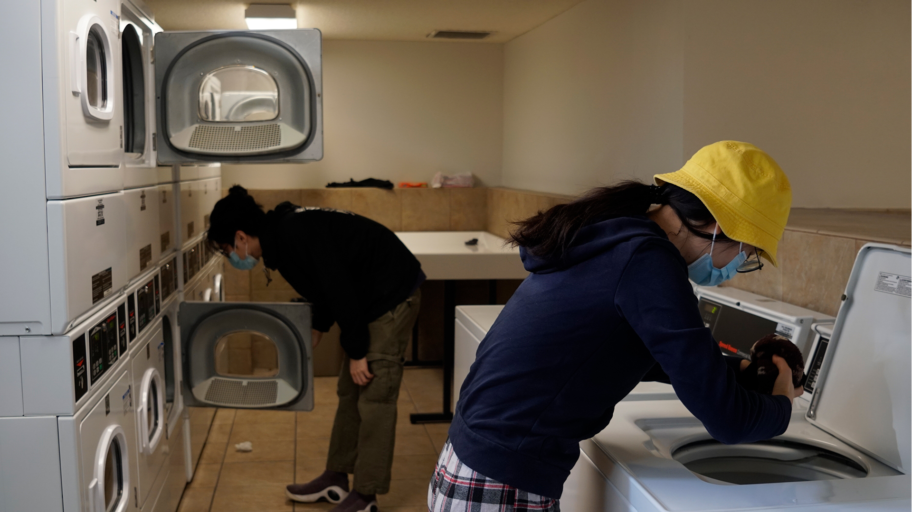
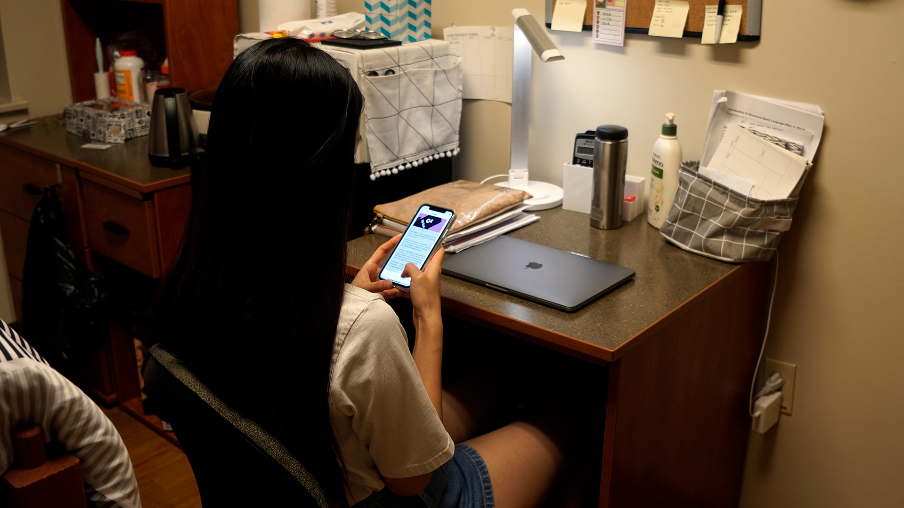

A couple of Chinese international students, Xuan Zhong and Xiaokang Chen, are looking at each other in the study room of University Place. With every single class going online this semester, they are planning to return to China in October or November.

Living off campus, the student couple are doing the laundry together at the public laundry room inside University Place. Amid the pandemic, they are on a strict self-quarantine and seldom leave their apartment.

Another chinese student, Xin Shu, who lives on campus and has classes in person, experienced the WeChat ban in residence halls on Sept.19. “Suddenly, I couldn’t get connected on WeChat using the campus Wi-Fi,” said Shu.